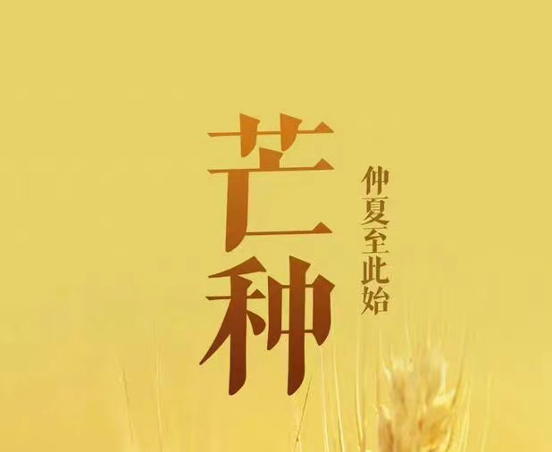

Toggle navigation
农业
网站首页
(current)
农村历史
农村文化
农耕节气
农村改革
登录注册
登录
注册
在线留言
立春
立春节气的特点和风俗 立春，作为二十四节气之首，标志着万物闭藏的冬季结束，进入风和日暖、万物生长的春季。在自然界中，立春最显著的特点是万物开始有复苏的迹象，如东风解冻、蜇虫始振、鱼陟负冰等物候现象。 立春节气拥有丰富的传统风俗和活动，以下是其中一些主要的习俗： 迎春。迎春是一项重要的祈福仪式，目的是把春天和句芒神接回来。 打春牛。人们用木头和土塑成春牛，并通过鞭打春牛来祈求丰收，表达对中国劳动人民对美好生活的热爱、向往和追求。 咬春。立春这天有吃春饼和萝卜等习俗，寓意咬得草根断，则百事可做。 贴春。立春日，人们会写春字、画春画，并在门上张贴迎春祝吉的字画。 躲春。在传统民俗学上，立春这一天被认为是气候开始交接，新的气场会对部分人群有不利的影响，因此有一些地方不宜有口舌之争，必须心平气和地迎接这一天。 此外，立春还有游春、报春等活动，人们通过这些活动来庆祝春天的到来，祈求新的一年能够风调雨顺、五谷丰登、国泰民安。
惊蛰
惊蛰，是二十四节气中的第三个节气。斗指丁太阳到达黄经345°，于公历3月5-6日交节。惊蛰反映着自然界生物受节律变化影响而萌发、生长的状态。时至惊蛰，阳气上升、气温回暖、春雷乍动、雨水增多，万物生机盎然。农耕生产与大自然的节律息息相关，惊蛰节气在农耕上有着相当重要的意义，它是古代农耕文化对于自然节令的反映。 “蛰”，指“藏伏”，昆虫入冬藏伏土中；“惊”指“惊醒”，天上的春雷惊醒蛰虫。所谓“春雷惊百虫”，是指惊蛰时节，春雷始鸣，惊醒蛰伏于地下越冬的蛰虫。在古时惊蛰当日，一些地方人们有用清香、艾草，熏家中四角，以香味驱赶“蛇虫蚊鼠”和霉味，久而久之渐渐演变成惊蛰打小人驱赶霉运习俗。此外还有“蒙鼓皮”“吃梨”“祭白虎化解是非”等习俗。 惊蛰节气的标志性特征是春雷乍动、万物生机盎然。从中国各地自然物候进程看，由于南北跨度大，春雷始鸣的时间迟早不一。“惊蛰始雷”仅与中国南方部分地区的自然节律相吻合

芒种
芒种节气的寓意和象征 芒种节气的寓意和象征主要体现在农耕文化和自然现象的和谐统一上。 芒种，作为二十四节气之一，标志着夏季的正式开始。在这个时节，气温显著升高，雨量充沛，为晚稻等谷类作物的种植提供了良好的条件。芒种的“芒”字，指的是麦类等有芒植物的收获，而“种”字则是指谷黍类作物播种的节令。这一节气不仅提醒人们有芒的麦子快收，同时也意味着有芒的稻子可以种植。因此，芒种节气在农耕上有着相当重要的意义，它是古代农耕文化对于节令的反映，也是种植农作物时机的分界点。 芒种的到来，预示着农民开始了忙碌的田间生活。一“收”一“种”，道出了芒种的节气内涵，体现了种和收的循环，有种才有收，种好才能收好的人生道理。这种哲理不仅适用于农业生产，也象征着生活中的播种与收获，寓意着只有付出辛勤的努力，才能收获丰硕的成果。 此外，芒种节气还有一些传统的民间习俗，如送花神、煮梅等，这些习俗丰富了芒种的文化内涵，使其不仅仅是一个农耕节气，更是人们表达对自然感恩、祈求丰收的美好愿望。
二十四节气
×
传统文化
二十四节气
立春、雨水、惊蛰、春分、清明、谷雨、立夏、小满、芒种、夏至、小暑、大暑、立秋、处暑、白露、秋分、寒露、霜降、立冬、小雪、大雪、冬至、小寒、大寒